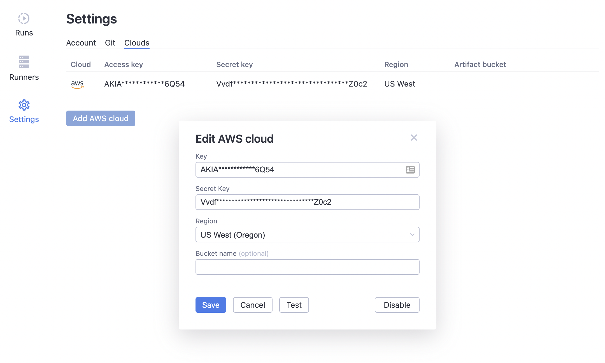

Quickstart
This quickstart guide will introduce you to the key concepts and help you with the first steps of using dstack.
Install the CLI
First, let's install and configure the dstack CLI:
pip install dstack
dstack config --token <token>
Your token can be found on the Settings page in the user interface.
Clone the repo
In this quickstart guide, we'll use the
dstackai/dstack-examples GitHub repo. Go ahead and clone this
repo. Feel free to use the Terminal or open the repo wth your favourite IDE.
git clone https://github.com/dstackai/dstack-examples.git
cd dstack-examples
If you open the .dstack/workflows.yaml file, you'll see the following content:
workflows:
- name: download
help: "Downloads the MNIST dataset"
provider: python
file: "download.py"
requirements: "requirements.txt"
artifacts: ["data"]
- name: train
help: "Trains a model and saves the checkpoints"
depends-on:
- download:latest
provider: python
file: "train.py"
requirements: "requirements.txt"
artifacts: ["model"]
resources:
gpu: 1
The download workflow downloads the MNIST dataset
to the data folder and saves it as an artifact.
Once you run this workflow, you'll be able to assign a tag to that run, and reuse its output artifacts
in other workflows, e.g. the train workflow.
Add your cloud credentials
To let dstack provision the infrastructure required for your workflows in your cloud account, you have to add
your cloud credentials on the Settings page in the user interface:

Run the download workflow
Let's go ahead and run the download workflow via the CLI:
dstack run download
NOTE:
Make sure to always use the CLI from the project repository directory.
Use the Runs page in the user interface to watch the progress of your workflow.
If you see your run failed, make sure to check the logs to find out the reason. Once the problem is fixed, feel free to re-run the workflow.
Assign a tag
In order to use the output artifacts of our run in other workflows, we need to assign a tag to our finished run. You can do it via the user interface.
In our example, thetrain workflow refers to the latest tag in its depends-on clause. To make it work,
we need to assign this tag to our finished download workflow. Tags can be assigned to finished runs via
the user interface.
Run the train workflow
Once the required tag is created, let's go ahead and run the train workflow:
dstack run train
Download artifacts
As a workflow is running, its output artifacts are saved in real-time. You can browse them via the user interface or the CLI.
To download the artifacts locally, use the CLI:
dstack artifacts download <run-name>